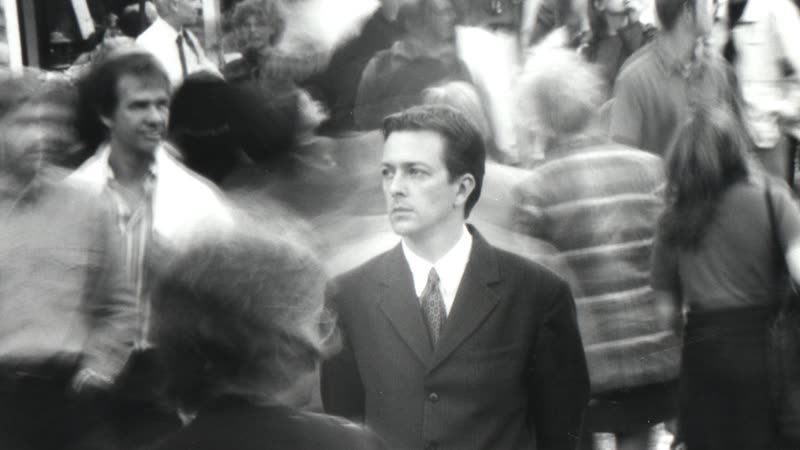
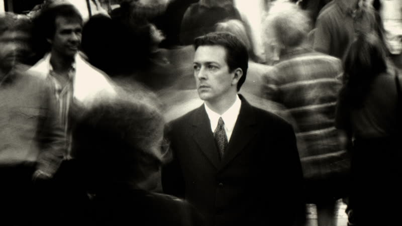
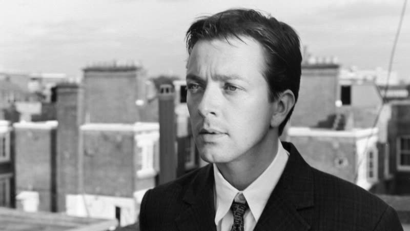
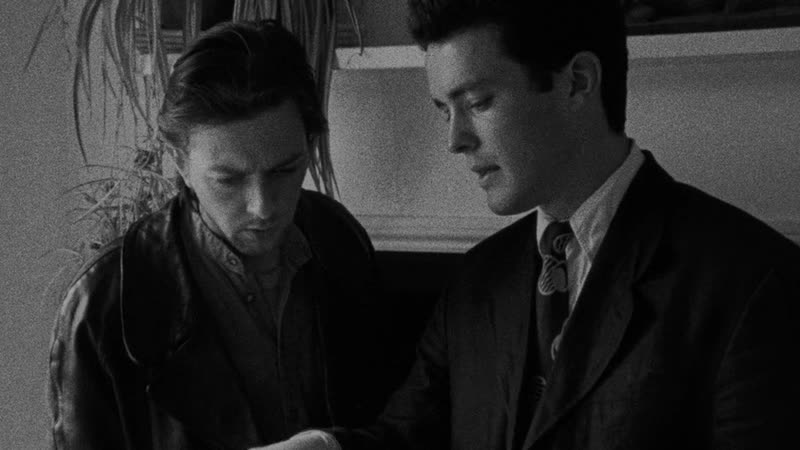

1998
Following
A lonely would-be writer who trails strangers around London is taken up by a burglar, and learns too late who is really being followed.
How it plays with time
The story is told out of order, cut between a handful of strands that are told apart mostly by how the young man looks and acts in each. Around them sits a police interview in which he recounts events. Nolan wrote it chronologically first, then rearranged it on paper. Exact strand boundaries are not confirmed by a fetched source. source
Themes
- Obsession
- The young man, bored and lonely, picks strangers in the street and trails them for the sake of it, first with a set of loose rules and then ignoring them. The habit that begins as a writer's research grows until it takes over his days. source
- Identity
- Once he is in with Cobb the young man takes on a new name and a sharper look, copying the burglar's habits. By the end it is unclear which version of him the police are really describing.
- Deception
- The man he trusts has set him up from the start. After the break-in at the Bald Guy's safe, the burglar uses the young man's own tool and fingerprints to leave him looking guilty, so the interview he gives is built on a lie the audience also believed.
- Time
- The film opens in a clean, controlled scene and then jumps between different points in the young man's story. The viewer assembles the order from clues, such as his changed appearance, rather than being told. source
Where it came from
- Nolan was drawn to the anonymous strangers in his crowded London neighbourhood and wondered about their lives. Nolan source
- A burglary at his own flat showed him how thin physical security is compared with social norms, which fed the film. Nolan source
- He wrote the script chronologically, then rearranged it, found it needed heavy rewriting, and wrote later non-linear scripts with the structure planned first. Nolan source
- Black and white and a short, heavily rehearsed schedule were choices that hid the lack of money and kept stock use low. Nolan source
Stills




Stills © their studios, used here for commentary and criticism.
People who keep coming back
- Emma Thomas, producer (worked with Nolan on the budget estimate; credited producer role unverified from fetched pages): also memento, insomnia, batman begins, the prestige, the dark knight, inception, the dark knight rises, interstellar, dunkirk, tenet, oppenheimer, the odyssey
- David Julyan, composer: also memento, insomnia, the prestige
- Jeremy Theobald, actor, The Young Man
- Alex Haw, actor, Cobb
- John Nolan, actor, The Policeman
How it was received
Festival and arthouse critics liked the tight plotting and noir feel for the money spent, while some found the inexperienced cast and the ending weaker. Metacritic's 60 is a mixed score; Rotten Tomatoes is warmer. Both are current figures, not release-week ones. Metacritic 60 source. Rotten Tomatoes 87% source.
It is now mostly read as the first look at Nolan's interest in broken chronology and unreliable accounts. Letterboxd reviews are mixed to positive, though the average rating was not shown on the fetched page.
Three things most people miss
- The young man's look, clothes and confidence change between strands, and these shifts are the main way to tell which timeline you are in. source
- The opening scene is deliberately the cleanest, best lit and best recorded in the film, so viewers settle in before the rougher handheld footage begins. source
- The scrambled order also helped the shoot: with only Saturdays to film, the non-linear structure helped hide continuity gaps across a year of irregular days. source
Cast
Jeremy Theobald as The Young Man (Bill / Daniel Lloyd); Alex Haw as Cobb; Lucy Russell as The Blonde; John Nolan as The Policeman; Dick Bradsell as The Bald Guy.